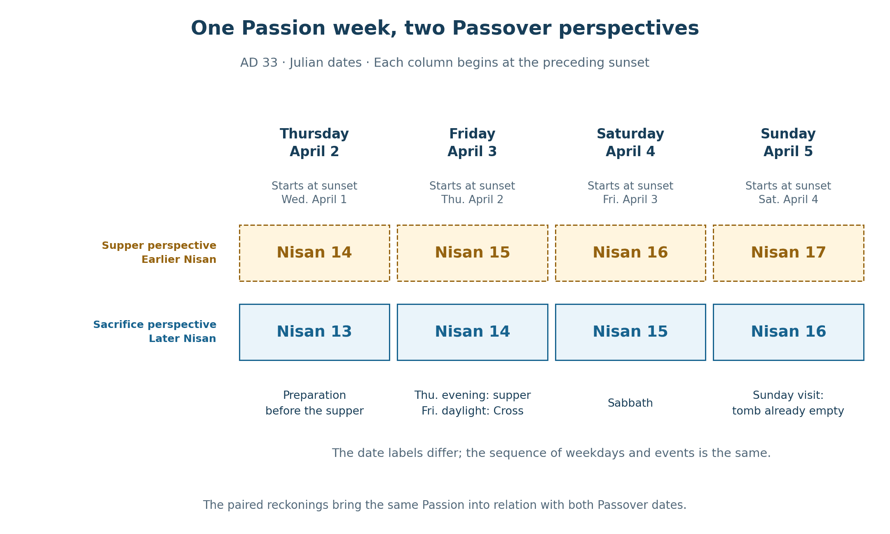
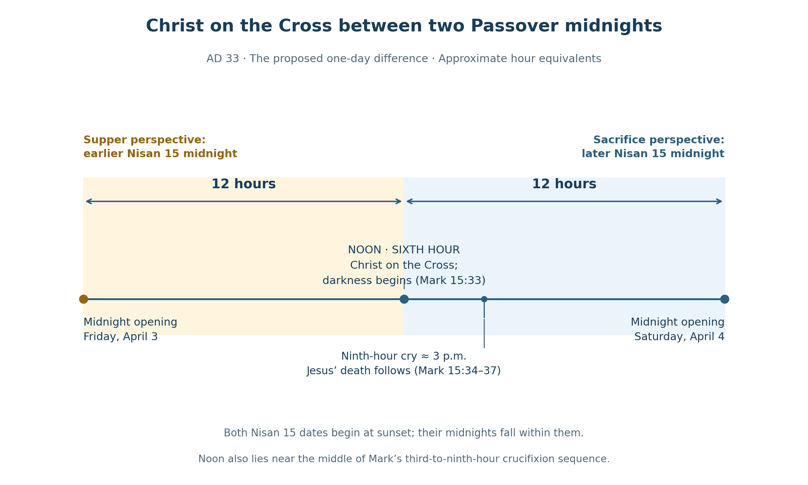
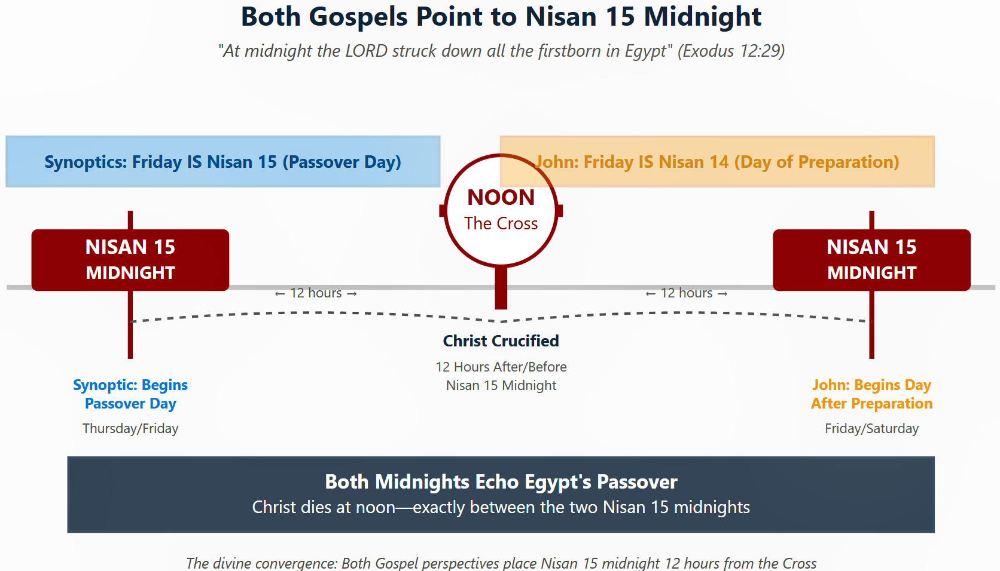

Book 1 · The Cross at the Center of Time · Chapter 4 of 18
The received chronology and the two midnights around the Cross
We have approached the Passion through the differing beginnings of days and through creation's movement from light into darkness and renewed light. I now place those relationships within a particular year: AD 33. The purpose is to give the comparisons a definite historical and traditional setting from which their larger significance can unfold.
The year has a central place in this book because several witnesses meet there. The received chronology of Christ's birth leads toward it through the ministry. An astronomical reconstruction supplies a Friday Nisan 14. The two Gospel date perspectives, taken together, place Christ on the Cross between two Passover midnights. I read these relationships as parts of the gathering already introduced: human reckonings brought into the service of God's purpose in Christ.
The Cross remains a real event within that chronology. I also approach it as the center from which, in the proposal guiding this book, the temporal order receives its fulfillment. The same inquiry therefore asks both where the event stands in our reckoning and how our reckonings may stand in relation to it.
The ancient civil dates in this chapter are Julian. In BC/AD reckoning, 1 BC is followed by AD 1; there is no year zero.
In this chapter
- Tradition as one of the witnesses
- A Friday within the astronomical reconstruction
- Two beginnings of Nisan
- The people at the table and the Temple
- Noon between two Passover midnights
- Three days within a fuller figure
- Firstfruits and the count to Pentecost
- From the center toward the wider pattern
- Sources and notes
Tradition as one of the witnesses
The received chronology placing Christ's birth on December 25, 1 BC, brings His eighth-day naming and circumcision to January 1, AD 1. December 25 is counted as the first day; January 1 is the eighth, seven elapsed days later. This sequence stands at the turning of the BC/AD era used throughout the book.1
The tradition's existence and influence belong to history even though the actual date of Jesus' birth remains uncertain. A reconstruction that places His birth earlier cannot remove the inherited chronology from the centuries in which people have lived, worshiped, and dated events through the Christian era. I treat that received point of reference as one of the witnesses encompassed by providence.
This is essential to my approach. God acts through human transmission, remembrance, convention, and tradition as well as through the motions of the heavens. The datum can contribute to a real correspondence even where the event commemorated cannot be dated with equal certainty. The book examines the relations that arise from the inherited chronology while identifying it as such.
The Unified Chronology explicitly retains December 25, 1 BC, and January 1, AD 1, in this role. Its comparisons preserve distinct chronological traditions and examine their relations. I carry that purpose into the Passion studies: the received chronology becomes a participant in the convergence.2
From a traditional conception in spring 1 BC, thirty elapsed years reach spring AD 30. A ministry represented as approximately three years then leads to spring AD 33. Luke's description of Jesus as about thirty at the beginning of His ministry belongs alongside this framework, although he does not say that His age is counted from conception.3
The autumn and spring beginnings used in the book must also remain distinct. AD 29t/30n compares an autumn beginning in Tishri AD 29 with a spring beginning in Nisan AD 30. Autumn AD 29 to spring AD 33 is approximately three and a half years; spring AD 30 to spring AD 33 is approximately three. These are related seasonal approaches to the ministry, not two names for the same starting instant.
Within this framework, AD 33 is the preferred Passion year. AD 30 remains another possible historical year, and its relation to the traditional period of the ministry's beginning is itself of interest to me. The book can acknowledge that alternative without becoming an extended contest over the most probable birth and death dates.
A Friday within the astronomical reconstruction
Humphreys and Waddington place Nisan 14 on Friday, April 3, AD 33. Their reconstruction also gives Friday, April 7, AD 30, as a principal candidate. The AD 30 discussion allows a highly improbable earlier Nisan beginning that could make that Friday Nisan 15. No corresponding earlier-crescent option is supplied for AD 33.4
This gives AD 33 an astronomical correspondence with the Nisan 14 perspective followed in John. It does not establish every part of the two-date reconstruction. The earlier Nisan 15 perspective requires a further historical explanation, which I leave open while examining its relationship to the Gospel testimony.
The sequence under consideration is Friday, April 3, Saturday, April 4, and Sunday, April 5, AD 33.
Two beginnings of Nisan
I retain the Synoptic supper as a Passover meal. Mark describes preparation on the day of the sacrifice, and Luke records Jesus' desire to eat this Passover before His suffering. Under the evening-based sequence, the meal begins Nisan 15 and the following daylight remains within that date.5
John brings the authorities before us while their Passover still appears to lie ahead. I read their concern about eating it, together with the Preparation notice, as the Nisan 14 perspective. The following table gives the beginnings of Nisan needed for both readings to describe the same Friday.
Table 1 — The month beginnings required by the two dates
| Reckoning | Beginning of Nisan 1 | Friday, April 3, in daylight | Sunday, April 5, in daylight |
|---|---|---|---|
| Earlier beginning: the supper perspective | Sunset Thursday, March 19; first daylight Friday, March 20 | Nisan 15 | Nisan 17 |
| Later beginning: the sacrifice perspective | Sunset Friday, March 20; first daylight Saturday, March 21 | Nisan 14 | Nisan 16 |
Both rows begin their dates at sunset. In either row, Thursday evening and Friday daylight belong to the same numbered date. The differing month beginnings preserve the sequence of historical weekdays while changing the Nisan label.
The astronomical condition can now be stated exactly. The cited reconstruction supports the later row. Its conjunction falls on March 19 around midday, and its visibility model does not establish an earlier crescent that evening. The first row would require a convention or decision other than an observed crescent on March 19. Delaying the later row by a day would make April 3 Nisan 13; it would not produce Nisan 15.6
That distinction allows the historical question to retain its proper shape. Observation, accepted testimony, calculation, and administrative authority are possible areas of inquiry. We do not possess a record identifying which alternative, if any, produced the earlier date in AD 33. I can show the required relationship without supplying a decision that has not been documented.
The people at the table and the Temple
The earlier perspective is considered here in relation to the Galilean disciples and Pharisaic traditions; the later one in relation to Jerusalem's Temple authorities and Sadducean leadership. The names matter because the harmony concerns the people and expectations gathered around Christ. They remain proposed associations within this reconstruction rather than universal calendars assigned to every member of each group.7
The earlier meal also raises a question distinct from the beginning of the month. Thursday's daylight is Nisan 14 in the earlier reckoning but Nisan 13 in the later one. How would an earlier Passover sacrifice have related to the Temple's schedule? The sources cited here do not establish two authorized sacrifice afternoons in that year. That practical mechanism remains unresolved.6
I retain the two Gospel perspectives through this uncertainty because their joint testimony is the subject of the book. Christ gives the covenant meal its meaning through His body and blood, and He gives Himself in the sacrifice. The historical circumstances by which both festival perspectives were expressed remain open to inquiry; their relationship in the Gospel presentation is before us.


The upper and lower rows retain the same historical sequence. The earlier row's historical mechanism is the open question identified above.
John's notice concerning Christ's unbroken bones joins the Passion to the Passover instructions. Paul gives the identification directly: “For Christ, our Passover lamb, has been sacrificed.” The meal and the Lamb belong together. I read the two dates as ways of approaching that whole testimony.8
The sacrificial timing also deserves precision. Josephus describes a ninth-to-eleventh-hour Passover offering period in a census setting, and the Mishnah places the Passover offerings after the daily afternoon offering. These provide an afternoon sacrificial background. They do not timestamp every action in the Passion year or put the death of Christ at noon.9
Noon between two Passover midnights
Exodus places the death of Egypt's firstborn at midnight. Each proposed Nisan 15 contains the midnight at which that deliverance is remembered. In the earlier reckoning, it is the midnight opening civil Friday, April 3. In the later reckoning, it is the midnight opening civil Saturday, April 4.10
The two midnights stand twenty-four hours apart. Friday noon lies twelve hours from each. Within Mark's narrative, Christ is on the Cross at the intervening noon as the darkness begins.



In this diagram, “Christ dies at noon” marks the midpoint of His six hours on the Cross, rather than the hour of His death. Christ is already on the Cross at noon; His death follows later. The two midnight references fall within the proposed Nisan 15 dates, each of which begins at sunset; midnight marks the civil-day transition, not the beginning of the Nisan date.

Noon marks the midpoint of the displayed interval and approximately the middle of Mark's third-to-ninth-hour crucifixion framework. Jesus' death follows the ninth-hour cry; it is not placed at noon.11
This is the center I want the reader to keep in view. From one direction, the Passover night has already arrived. From the other, it is approaching. Between them stands Christ, entering the darkness at the height of the day.
The arithmetic describes an ordinary relationship between two selected midnights. I believe its significance may open onto something extraordinary. Within the larger proposal of this book, the Cross is where the Creator brings the times into their perfected relation. The diagram is therefore more than an illustration of an abstract idea to me: it is a visible relationship through which I contemplate a possible actual transformation of time.
When I call noon an event horizon, I mean the limit at which the order we can chart meets an act of God whose full reach we cannot observe. The twelve-hour symmetry is measurable; my further proposal is that the Cross may also transform the temporal order itself. The calculation identifies the center I am contemplating. It does not tell us how God acts there.
John's “about the sixth hour” continues to draw my attention here. Its setting remains the proceedings before Pilate. I will return to its significance beside Mark's noon darkness, while leaving the historical coordination of their hour notices open. The midpoint established here lets the reader recognize the same center in the later charts.
Three days within a fuller figure
Friday, Saturday, and Sunday receive the labels Nisan 14–16 under the later beginning and Nisan 15–17 under the earlier one. Each sequence supplies three dates counted inclusively. The combined representation spans the four successive labels Nisan 14–17.
I retain the added figurative day as part of the proposed harmony. It contributes to the larger reading of Jonah, Lazarus, and the prophetic periods developed later. Figurative expression is one of the ways Scripture can gather related realities into a fuller form.
The added label is not an additional twenty-four hours on an elapsed-time clock. Both rows continue to describe the same Friday-to-Sunday history. Their combination therefore does not by itself establish seventy-two hours in the tomb. The proposed meaning of the fuller figure must arise from its scriptural relationships, which the later chapters will explain.12
This is also how I distinguish a figure from the reality to which I believe it points. A figurative arrangement can bear witness to an actual divine work without becoming a literal measurement of that work. The calendrical representation and the proposed renewal of time are connected in my interpretation, but they are not identical kinds of statement.
Firstfruits and the count to Pentecost
Sunday, April 5, is Nisan 16 in the later reckoning and Nisan 17 in the earlier one. Under the rule that Firstfruits follows the weekly Sabbath, the same Sunday can be Firstfruits in either case. Counting fifty days inclusively reaches Sunday, May 24.13
The Nisan number changes the festival's numbered position from the start of the month. If Firstfruits is Nisan 16, Pentecost is day 65 from Nisan 1. If Firstfruits is Nisan 17, Pentecost is day 66. With a thirty-day Nisan and twenty-nine-day Iyar, these positions are Sivan 6 and Sivan 7 respectively.
Table 2 — The Sunday rule under the two month beginnings
| Firstfruits on Sunday, April 5 | Pentecost on Sunday, May 24 | Position counted from Nisan 1 |
|---|---|---|
| Nisan 16 | Sivan 6 under the stated month lengths | Day 65 |
| Nisan 17 | Sivan 7 under the stated month lengths | Day 66 |
Daniel 12:12 speaks of 1,335 days. The day-66 case gives that total when the autumn starting date is specified. Taking the daylight of September 28, AD 29, as Tishri 1, the interval to the daylight of March 20, AD 33, is 1,269 elapsed days. Counting Nisan 1 as day 1 of the following segment gives:
1,269 + 66 = 1,335 days, including both Trumpets and Pentecost.
The companion reckoning begins Nisan one day later and gives:
1,270 + 65 = 1,335 days, with the same inclusive endpoints.
In both calculations Nisan 1 belongs only to the second segment. The one-day shift changes the two parts in opposite directions, leaving their sum unchanged. These are conditional applications of the stated dates rather than recovered records of ancient proclamations.13
The interval is reconstructed as forty-three lunar months: forty-two regular months plus one added month. The ancient decisions about intercalation and observation are not fully known, and applying a later Metonic cycle backward cannot recover them. Adding a further month would create a different interval, such as the 1,299-day example in Chapter 5; it must not be inserted into the AD 29–33 count above.14
The 364-day calendar contributes another path to 1,335, developed in Chapter 5. Its Pentecost need not fall on May 24 in order for its own festival count to have the same total. A shared number and a shared historical endpoint are different forms of agreement. Both kinds are relevant to the larger inquiry when their conditions are stated.
From the center toward the wider pattern
John's account of the empty tomb returns our attention to darkness before dawn. The stone is already removed when Mary arrives. I continue to read that setting beside Christ as the Morning Star, while leaving the precise moment of resurrection unstated. The fuller celestial comparison belongs to Book 2.15
The two date perspectives, the midnights, noon, the enlarged figurative span, and the festival counts have now been placed together. They prepare questions whose fuller answers lie ahead: why these boundaries recur, how the prophetic periods relate to the feasts, and how the earthly patterns may be accompanied by a celestial testimony.
I see the Cross gathering the meal and the sacrifice, the night already entered and the night still approaching, the traditions people inherit and the dates they calculate. Their distinct features give substance to the unity I seek. My conviction is that the gathering reaches into the order of time itself; the following chapters examine the relationships through which I believe that conviction becomes visible.
Chapter 5 supplies their common numerical language. The calendars will retain their own dates and meanings while their periods are also expressed through the biblical proportions of thirty-day months and a 360-day year.
Sources and notes
1. Luke 2:21. Alden A. Mosshammer, The Easter Computus and the Origins of the Christian Era (Oxford, 2008), chapter 16, “The Christian Era of Panodorus”, identifies December 25, 1 BC, as Panodorus's Nativity date and the date implicit in Dionysius's Christian era. This supports the received datum used here; early Christian chronologies were not uniform. Return to text
2. Unified Chronology, File 00, especially the Providence Protocol, and File 13, especially §7.1. The retained traditional birth and naming sequence supplies the datum for this inquiry. Civil BC/AD spans have no year zero. Return to text
3. Luke 3:23. From spring 1 BC to spring AD 30, the elapsed year count is 1 + 30 − 1 = 30. Spring AD 30 to spring AD 33 adds 3 years. The first comparison is conception-based; Luke does not explicitly count age from conception. The letters t and n mark the Tishri/autumn and Nisan/spring perspectives. Autumn AD 29 and spring AD 30 are distinct beginnings. Return to text
4. Colin J. Humphreys and W. G. Waddington, “The Jewish Calendar, A Lunar Eclipse and the Date of Christ's Crucifixion”, Tyndale Bulletin 43.2 (1992): 331–351, tables 1–2, pp. 335–337. Their AD 30 earlier-date note is highly qualified; it should not be transferred to AD 33. Return to text
5. Mark 14:12–17; Luke 22:7–15; John 18:28; 19:14. The Nisan 15 / Nisan 14 pairing identifies the reading pursued here. Neither account describes the two month proclamations in Table 1. Return to text
6. Humphreys and Waddington give conjunction on March 19, AD 33, at 12:45 Jerusalem local apparent solar time. Their visibility reconstruction does not establish the proposed March 19 evening beginning. Compare the U.S. Naval Observatory's “Crescent Moon Visibility”. The Temple problem is distinct: Thursday is Nisan 14 in the earlier row but Nisan 13 in the later. Deuteronomy 16:5–6, Mark 14:12, and Luke 22:7 supply the sacrificial setting; the cited sources do not establish two authorized sacrifice afternoons in AD 33. Return to text 1 · Return to text 2
7. Mishnah Rosh Hashanah 2:6, 8–9; Josephus, Antiquities 18.16–17. The Yavneh calendar dispute is later than the Passion. These sources inform the inquiry into authority and party identity without documenting the proposed universal Galilean/Pharisaic–Judean/Sadducean division. Return to text
8. John 19:33–36; Exodus 12:46; Numbers 9:12; Psalm 34:20; 1 Corinthians 5:7. The quotation follows BSB. The Psalm supplies a related righteous-sufferer association for the unbroken bones. Return to text
9. Josephus, Jewish War 6.422–423; Mishnah Pesachim 5:1. On a Friday Passover eve, the Mishnah assigns the daily offering to six and a half / seven and a half hours, with Passover offerings afterward. The daily offering and the Passover offerings are distinct. Return to text
10. Exodus 12:29. The diagram uses the midnight within each proposed Nisan 15. Both dates begin at sunset. The twenty-four-hour separation and twelve-hour midpoint follow from the assumed one-day month difference. Return to text
11. Mark 15:25, 33–37; John 19:14. The approximate modern equivalents are 9 a.m., noon, and 3 p.m. John places his sixth-hour notice before crucifixion; Mark places the sixth-hour darkness during it. The diagrams preserve these settings. Return to text
12. The composite labels are {14, 15, 16} ∪ {15, 16, 17} = {14, 15, 16, 17}. Matthew 12:40, John 11, and Daniel 12:11–12 supply the later scriptural comparisons. The combination establishes a fuller representation, not an elapsed tomb duration. Return to text
13. Daniel 12:12 gives the 1,335-day measure. April 5 to May 24 is 49 elapsed days, or 50 dates inclusively. Thus 16 + 49 = 65 and 17 + 49 = 66. For the conditional AD 29–33 application, September 28, AD 29, to March 20, AD 33, is 1,269 elapsed days; to March 21 it is 1,270. Nisan 1 is counted only in the second segment, giving 1,269 + 66 = 1,270 + 65 = 1,335. The Julian dates and weekdays have been checked. The assumed ancient identifications of those dates remain conditional. Return to text 1 · Return to text 2
14. Forty-three lunar months correspond to forty-two regular months plus one intercalation. Ancient intercalation, harvest conditions, sighting, and declaration cannot be recovered simply by applying the later fixed calendar backward. The 1,299-day comparison in Chapter 5 concerns a different intercalation case, not an additional month established between the AD 29 and AD 33 anchors used here. Return to text
15. John 20:1–2; Revelation 22:16. The Morning Star connection is the theological interpretation developed through the book; the darkness notice records the visit to the already-opened tomb. Return to text
Scripture quotations are from the Berean Standard Bible (BSB), public domain.